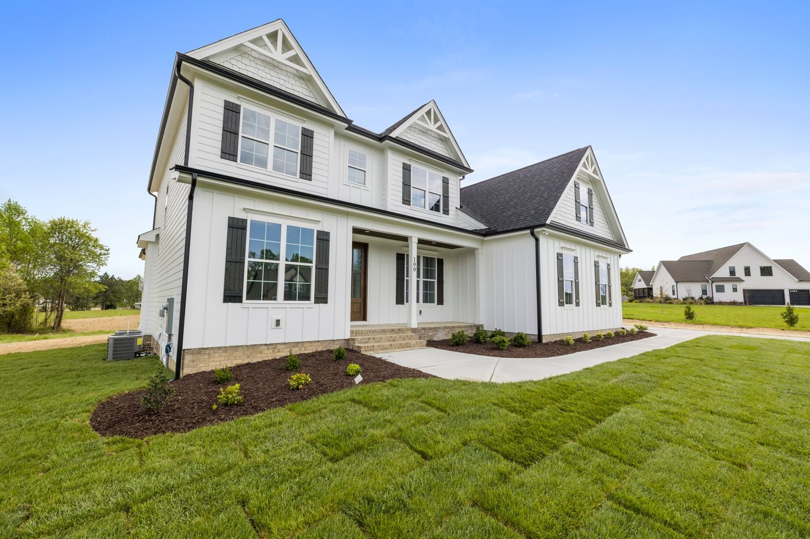
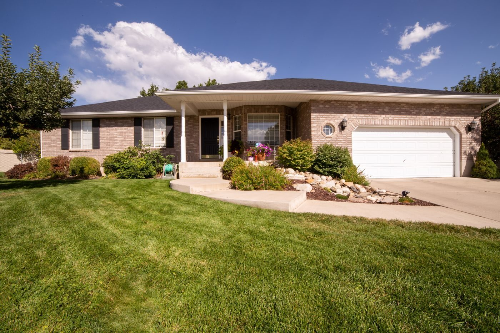

Slidell, Louisiana
An independent insurance agency with 20 plus associates, writing personal and commercial coverage through carriers including Louisiana Citizens Property, The Hartford, NFIP flood, Blue Cross Blue Shield, CNA, Progressive, American Strategic, and Stonetrust.
Lowry-Dunham, Case and Vivien is an independent insurance agency founded in 1901, with 20 plus associates. It writes personal and commercial coverage through a range of carriers.


2001 1st Street, Slidell, LA 70458
Monday to Friday 8:30 AM to 4:30 PM, Saturday to Sunday closed